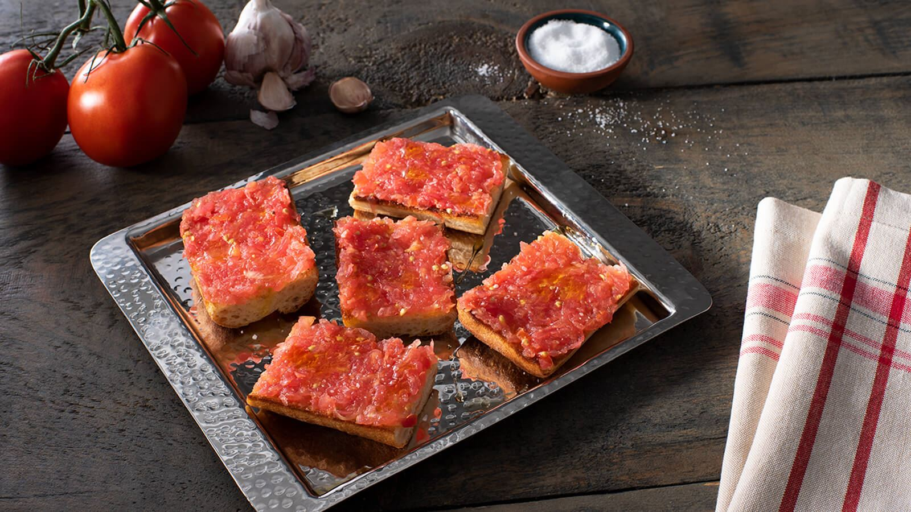

Pà amb tomàquet

Bread with Tomato Recipe
One of the most typical dish in Catalonia and also in Spain.
It is a quick, simple and finger licking recipe.
There are many variations and we will see some of them.
Ingredients
- Slices of bread
- Tomatoes on the vine
- Some extra virgin olive oil
- Salt (optional)
- 1 Garlic clove, peeled (optional)
Steps
- Toast the bread in a toaster or a pan.
- Cut the tomatoes in half and spred directly on the bread.
- If you want more taste of the tomatose, you could grate them using a grater, discarting the skin.
- Add a splash of oil and that's it!
- You cut eat the bread with tomatoe and some salt on top of it.
- You can also cut some cheese or some ham and put it on top aswell.
- Another variation is to cut the garlic in half lengthwise and spread it on the bread.
Return to main page